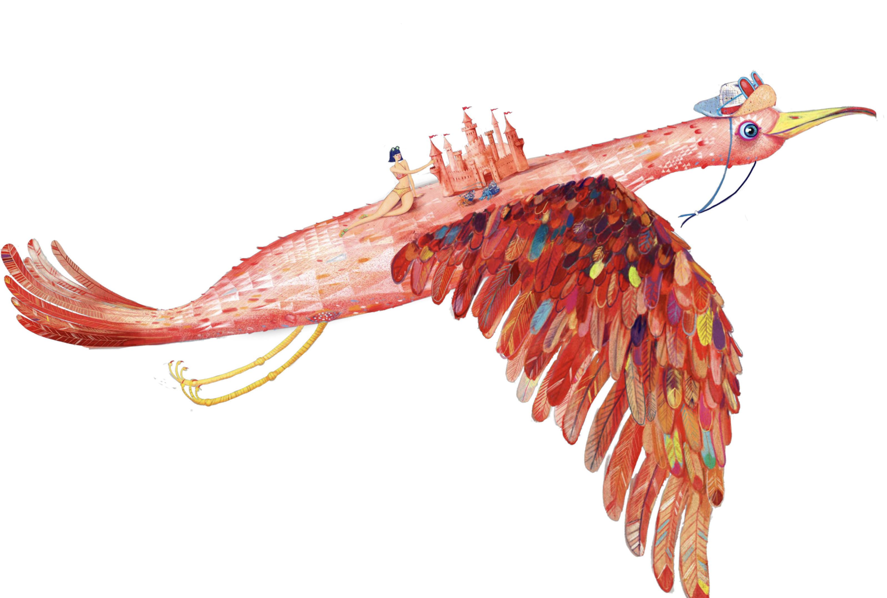
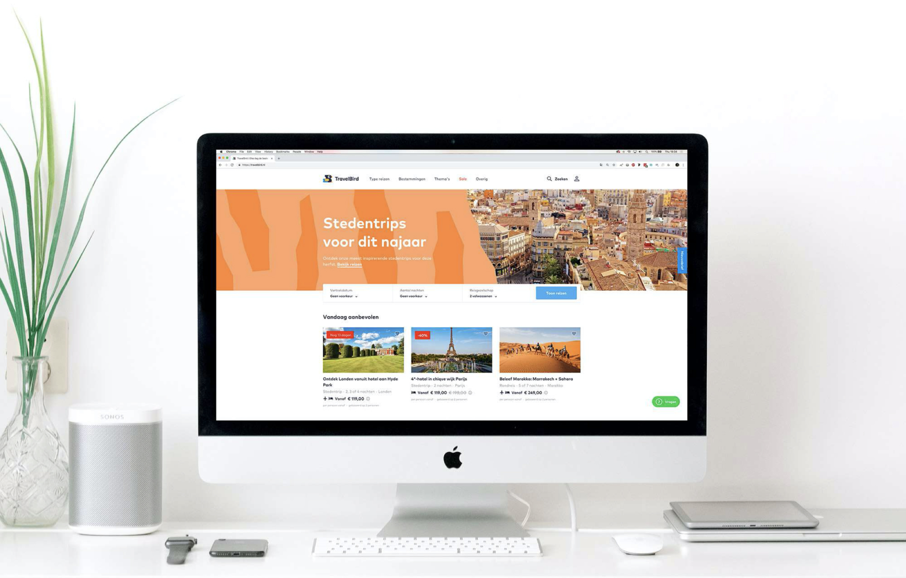
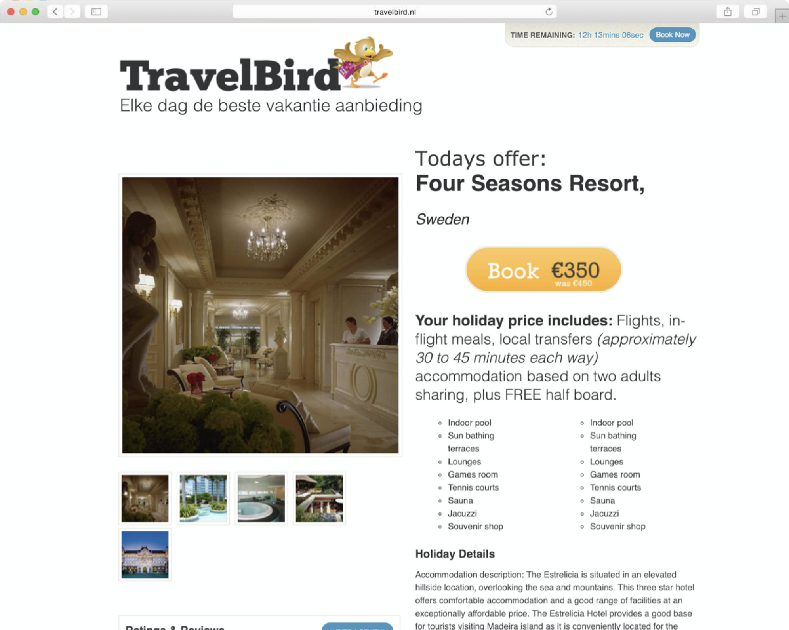
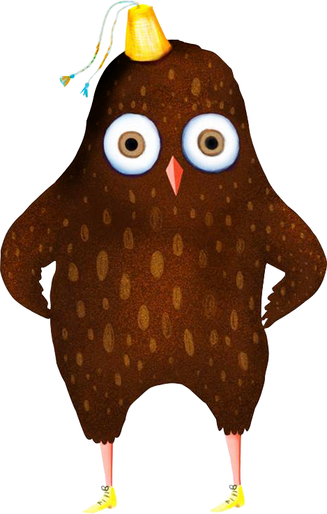
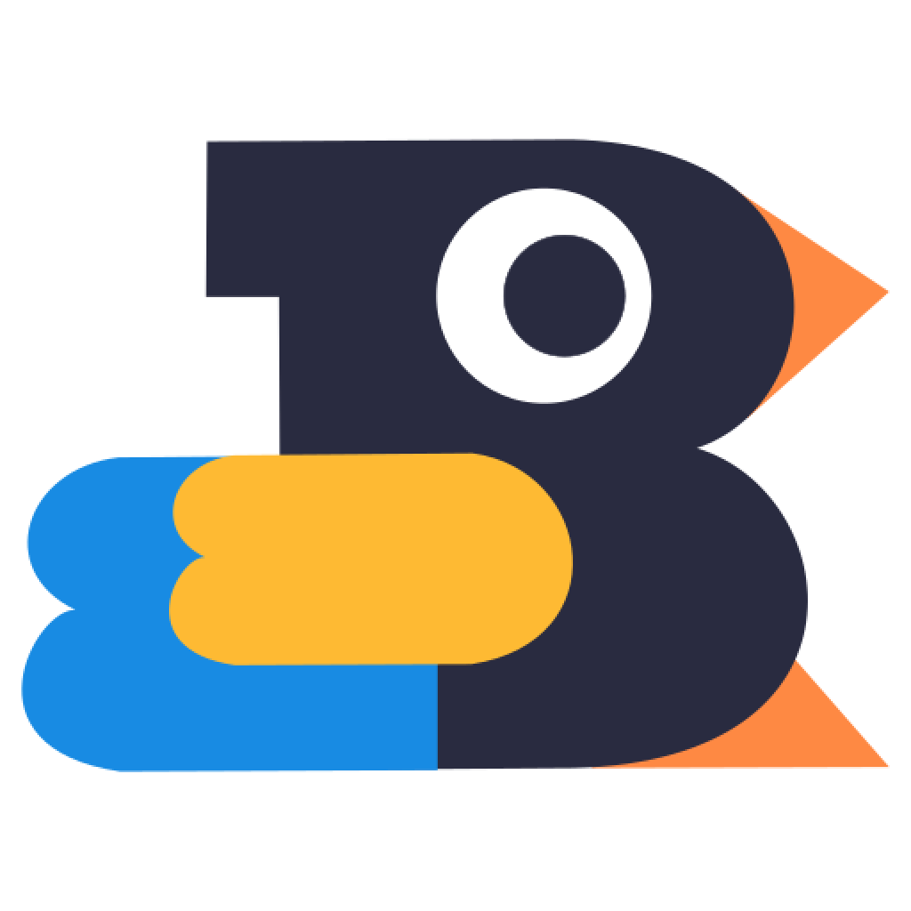
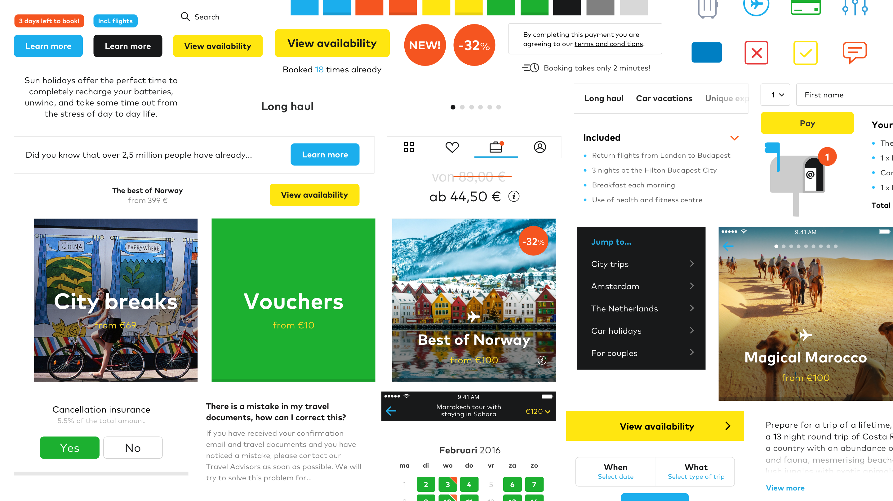
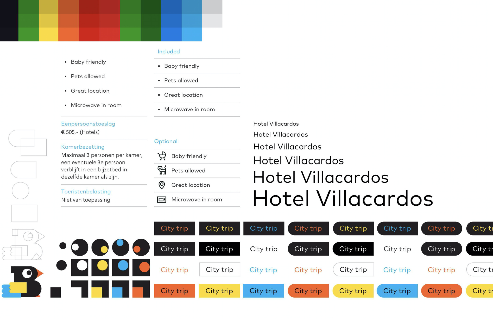
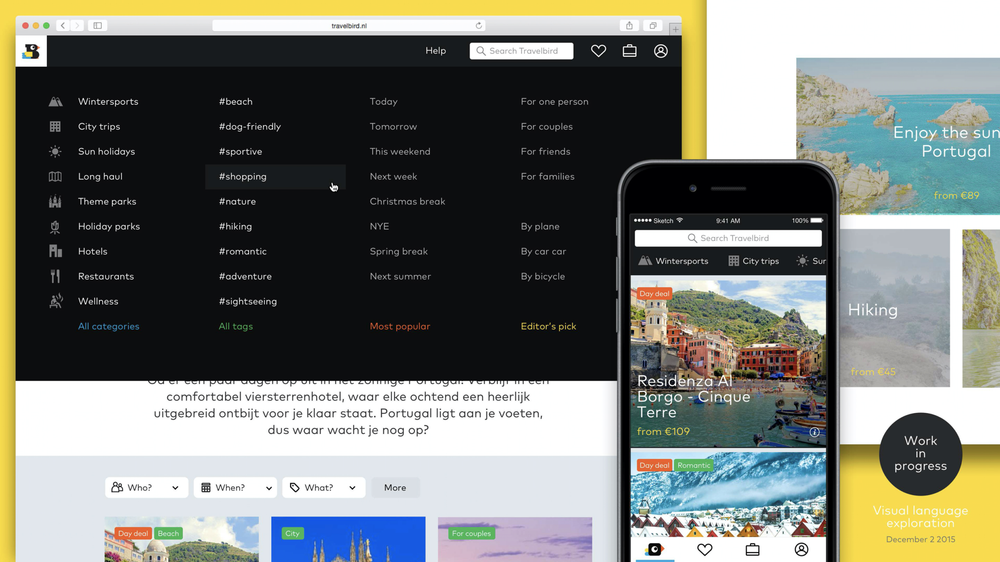

We inspire you to discover new places with a fresh packages
Project Overview
TravelBird, one of Amsterdam's hottest scale-ups shaping the future of travel, offers you a unique and challenging opportunity to join an international, dynamic and entrepreneurial team of over 300 self-starters.
From far away dream trips to a quick, conveniently-discounted weekend getaway, TravelBird always offers affordable and well-organised travel happiness that fits any suitcase, and any budget.
My Contributions
I worked at TravelBird 5 years. In the early days I was the only designer and worked late nights with the team on beer and pizzas to perfect the website and emails. I changed office 3 times and desks 32 times. During my time the company grew from just a few to700+ people.
During this time I learned about marketing as a member of the marketing team and front-end coding as a member of the IT team. I know all about SCRUM, as I recently participated in a SCRUM training.

Founded in 2010, TravelBird’s focus is to bring back the joy of travelling by inspiring to explore and discover new destinations in a simple manner.
Active in eleven markets across Europe and inspiring 10 millions travellers daily via email, web and mobile app.
My Role
My role was mainly creating and improving the UX-UI design and leading the design team. Since the start of TravelBird I was responsible for all interactive design and the corporate style in line with the company’s culture.
Up until April 2016, we continuously improved the design in Travelbird and I, together with my team, addressed customer pain-points in browsing through the site.
Customer Insights &
Ideation
At the start of any new project, Product Requirements Documents and user stories were prepared by the Product Manager and shared with the feature team. For innovational projects, an external research agency was hired.
Experience Strategy & Vision
After clarifying which problems had to be resolved, I created frameworks and prototypes to share my vision, design principles and content strategy. This helped to finalize ideas, gain alignment, and drive decision making.
Build & deploy
As soon as we felt comfortable enough with the (pretested) solutions, we groomed the concepts with the development team. Since the development team was involved early in the design process, large surprises could be avoided.

The Challenge
Managing the design process while meeting expectations
Daily offers were manually selected and prepared to be sent to the entire e-mail database. There was no active portfolio management nor personalisation yet.
My challenge was to meet the evolving customers expectations when entering the highly competitive on- demand curated holiday experience.
The current system and website of Travelbird was not build in a user-centered approach. It was very difficult for the operations team to create a neat curated experience and market specific holidays/trips.

— This screenshot was taken in early 2012 —

The Approach
Simple, personal and inspiring
We were tasked with designing and building TravelBird’s website and mobile apps in eight different European countries. The main objective here was to be customer- centric.
We conducted user research and based on these data we build the unique combination of structure, content and user experience that would accomplish required goals in efficient ways.
The assumption was simple; millions of customers visit TravelBird everyday. Let them get inspired with conceptual curated and inspirational deals in a very minimal way. This minimalistic approach had a major impact on the quality of the customer experience we could both create and reconcile.
Download full case [PDF]

Broad exploration
Component Design
Just like our products, revising, testing, and evolving the components of our visual identity is an ongoing process. This contributes to keeping the communications fresh, inspiring, and relevant for our audiences.
The main goal was designing an interface which was overall consistent and scalable for the future. All components were designed in detail and were consistent in order to create an interface overall familiar to our end- users.
Wireframes turned into high-fidelity mockups, leading to an awesome, clean and simple new design.
Travelbird’s main focus was ease of use, simplicity and selling their initially low amount of products. All focus went to the products which were instantly visible in the homepage. On every landingpage there was an easy navigation present, leading prospects to other relevant pages/deals.

Finalising the Design
After carefully customising the design for mobile devices and tablets, we were ready to go live. Based on detailed documentation of all the specs provided by us, the developers were able to build Travelbird exactly as intended by me and my team.
